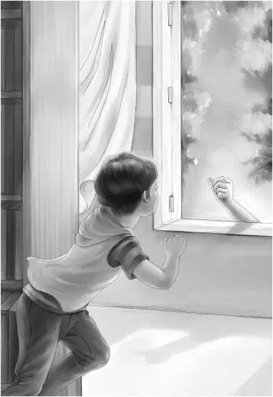

Chapter 10 A Discovery
吃早饭的时候，大家谈论起了那两艘船和两个男人的事情。
“敲钟的时间到了。”班尼说，“我得走了。”
其实，班尼还有其他的心事——他想到教室里转悠一圈，看看华盛顿画像上的那颗扣子。
班尼开了教室门，径直朝后堂走去。只见冬天用的木柴依旧高高地堆在那里，后门、窗子、大烟囱……一切如常。他推了推窗子，发现并没上锁，锁头看上去很旧，似乎很久没用过了。班尼试了试，发现锁是坏的，一看就知道坏了好多年了。
班尼看了看窗户下方的地板，发现地上散落着几片白色的干油漆，和窗台上的一模一样。
“昨晚准是有人从窗子爬进来过。”班尼心想，“可那人居心何在呢？要是约翰·卡特先生在就好了，虽然我不喜欢别人插手，可他毕竟为爷爷工作过，又在联邦调查局当过差。”
班尼再次转头看了看——只剩下那个大烟囱和旁边的清洁柜没有检查过了。他打开柜子看了看，发现那只是一个普通的柜子，里面放着把扫帚。
课间休息的时候，班尼通知哥哥姐姐，让他们等学生走后留下来。最后，学校里只剩下了他们几个人。
“班尼，发生了什么事？”杰西问道。
“去后堂吧！”班尼说，“过去看看就知道了。”
四个孩子来到了窄小的后堂。“看到地板上的油漆痕迹了吗？”班尼问道。
“看到了，老弟。”亨利弯腰观察着，“你真聪明！这是才落下的印迹，肯定有人翻窗进来过——或许弗莱昨晚就睡在这里。”
“这个柜子没有什么特别的。”班尼说着，打开了大烟囱旁边的柜门，“看，里面只有把扫帚。”
“等等！”亨利叫了起来，“看到柜子里的挡板了吗？要是咱们能撬开它的话……”
亨利拿出刀子，撬了几下，还没怎么费劲，一块木板就松动并掉下来了，烟囱里居然露出一个砖砌的密室！
“我说这个烟囱怎么这么大，还是方形的！”亨利说，“原来这就是原因——有人在这儿建了个密室！”
“是谁建的？”班尼问道。
“不知道。估计学校初建的时候就有了，那应该是很久很久之前了。听说新英格兰人建房子时，都会在烟囱里造个密室，应该就是这种吧。真是妙不可言！”
“可不是么！”班尼说，“咱们可以在这儿监视教室里的动静。”
“怎么会这么想，班尼？”维莉问道，“咱们干吗要监视那些孩子呢？”
“不是监视孩子们，维莉！”班尼解释道，“也不是在白天监视。是在晚上！要是弗莱偷溜进来的话，咱们就可以发现他了——我敢说他一定会这么做的。”
“跟我想到一块儿去了，班尼。”亨利说，“他肯定要找个地儿去藏他的那些宝贝。”
孩子们把木板放回原处，锁了前门，赶回旅馆去吃午饭。他们把密室的事情告诉了爷爷。吃过午饭，爷爷说道：“有件事你们谁都不知道，只有我知道！”
孩子们全都笑了起来。
“什么事呢？”维莉问道。
于是，奥登先生把格雷图书馆和旧书的事情告诉了孩子们。听完后，班尼迫不及待地把凳子往后一推，站了起来：“那我可得过去看看，说不准还能找到些图片给学生们用。”
“那你恐怕要白跑一趟了，班尼。”奥登先生说，“芬顿先生说过，那些书都很旧了。”
“也许会有华盛顿的老照片呢？”班尼说，“不管怎样，我去看看再说吧。”
接着，他拿起一个笔记本，出发了。
图书馆的门果然没锁，班尼推门进去，看到一个敞亮的开间，四周围满了书架，屋中间摆放的书架最高。
“开工咯！”班尼喊了一声，吹起了口哨。他走到第一排书架前，看了看顶层架子上落满灰尘的书，接着又跪下来，朝最底层看了看。突然，他的心里泛起了一丝奇怪的感觉——屋里好像有人！他仔细听了听，可又没有听到任何动静。
“又在乱想了！”班尼心想，“芬顿先生说过，没人会来这儿的。”
可是紧接着，又传来一阵非常细微的响动。“怎么回事？”他心想。
“这里一定有人！”不过他既没有站起来，也没有转过身，而是侧起耳朵听了听。又是一阵细微的响动——就在屋中间的书架后面！班尼知道，就算自己转过身也看不到什么——书架太高了。接着，他听到轻轻的砰的一声，然后又是一声。班尼连忙绕过书架，却只看到几根手指消失在窗台上，窗子是打开的。
“我看到你了，弗莱先生！”班尼大喊一声跑到了窗前。他向外看了看，但一个人影也没看到。
“弗莱准是躲了起来。”班尼自言自语道，“他来不及去别的地方。不过我知道该怎么办了。”
班尼沿着山路朝崖顶的庄园跑去！
他按响了门铃，脸上不禁露出了笑容——原来艾娃正透过门缝望着他。不一会儿，格雷女士亲自开了门。
“很抱歉，格雷女士。”班尼十分急促地说道，“刚才有人从图书馆偷走了几本书。我必须先来跟您说一声，也许那些书很值钱呢。”
艾娃惊讶地睁圆了眼睛，只听格雷女士说道：“谢谢你，班尼，我会亲自过去看看的。最值钱的几本书，只有我知道在哪儿。艾娃，你也一起去。”
三个人匆匆走下悬崖，格雷女士进了图书馆，径直朝最后一个书架走去。果然不出所料，书架上空了几个位置出来。格雷女士很清楚，最值钱的几本书就摆在这几个位置上——看来弗莱也已经知道了。
“一共丢了四本。”格雷女士说，“那是一整套书。我从没料到这些书竟然会被偷走。看看这儿，丢的不止四本呢！看来弗莱先生之前就光顾过了。”
说着，她又在屋子里走了一圈，发现每个书架上都丢了些书。“哦，天呐！”格雷女士叫了起来，“我最珍贵的书也被拿走了！那一定可以卖个好价钱的！”

“看看这个，格雷女士！”班尼说道，“这是借书的时候签名用的。看，上面写着弗莱·维尔利的名字！”
“估计他是不会把书还回来了。”格雷女士说，“都怪我太蠢，怎么就不知道把门锁上呢！”
“我可不这样想。”班尼说，“就算是上了锁，弗莱还可以从窗子里爬进来，门窗是挡不住他的。所以我才说，他是个小偷。别太担心，格雷女士，我爷爷已经开始注意弗莱了，爷爷可很少有失手的时候。”